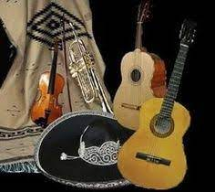
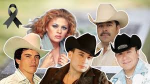
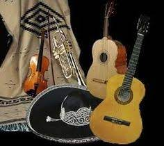
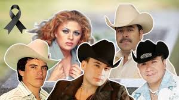
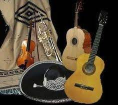
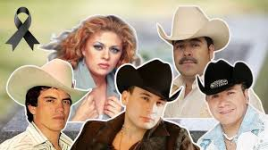

El género regional mexicano es uno de los más representativos de la cultura y tradición musical de México. Este género incluye estilos como el mariachi, la banda, la música norteña y los corridos, cada uno con sus características únicas que reflejan la historia, el folclore y las emociones del pueblo mexicano. Con letras que evocan amor, desamor, la vida rural y la lucha diaria, el regional mexicano ha trascendido fronteras, ganándose un lugar especial en los corazones de millones de personas en todo el mundo. Este género contiene intrumentos como la guitarra, el acordeón, el trombon y el bajo electrico que son muy comunes en todas sus interpretaciones. A lo largo del tiempo, el regional mexicano ha evolucionado, fusionandose con otros géneros y alcanzando popularidad tanto dentro de México como en otras partes del mundo. La música regional mexicana es un vibrante reflejo de las raices culturales y la esencia del pueblo mexicano. Este género engloba una variedad de estilos musicales, como los romanticos acordes del mariachi, las poderosas notas de la banda sinaloense, los emotivos corridos y los ritmos energicos de la música del norte. El regional mexicano ha logrado trascender generaciones, siendo una expresión artística que evoluciona constantemente. Hoy en día, artistas y agrupaciones de música regional mexicana han incorporado nuevos sonidos y colaboraciones internacionales, llevando esta tradicion a escenarios globales y conquistando audiencias mas alla de las fronteras de México. Este género no solo es música, sino un símbolo de orgullo y pertenencia para millones de personas alrededor del mundo.


Escucha mi playlist:
Ir al playlist en Spotify